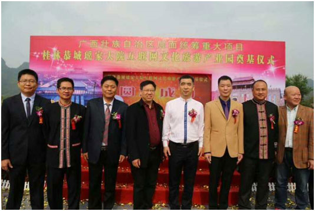

恭城瑶家大院互联网影视旅游基地。
人民网宜州8月21日电（王勇）
传承发展中华优秀传统文化 建设“文化恭城”

据悉，早在2016年10月份恭城县委书记邓晓强就亲自带队前往广州考察，期间拜访了广东省影视行业协会，并与协会理事会成员进行了深入交流。恭城县在实施中华优秀传统文化传统发展工程取得初步成效，恭城浓厚又独特的瑶族文化、岭南文化与恭城传统文化交织的独特蕴味、优质的生态旅游环境、高铁带动的一系列经济效益和旅游市场的发展以及一城二区三生四大的发展理念与广东省影视行业协会契合，该协会经过多次调研与考察，组建桂林恭城瑶家大院互联网影视旅游发展有限公司，决定投资建设我国影视行业内首个开放式的互联网影视专业景区一恭城瑶家大院互联网影视旅游基地。希望项目的启动能为恭城的经济带来更多的发展机会、能为恭城的传统文化和广东的岭南文化传承发展带来更好的机遇，也希望通过项目让更多的恭城人民能在家门口上班，为弘扬恭城的文化美、风景美、民风美做出自己的贡献。